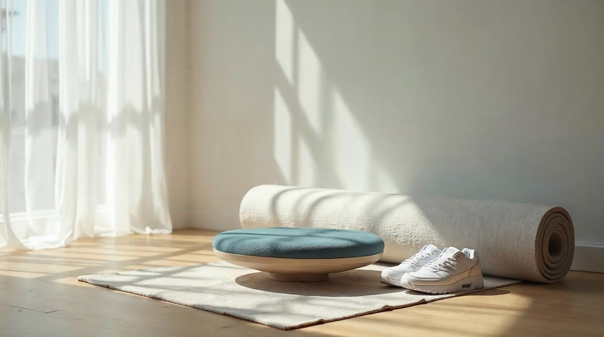
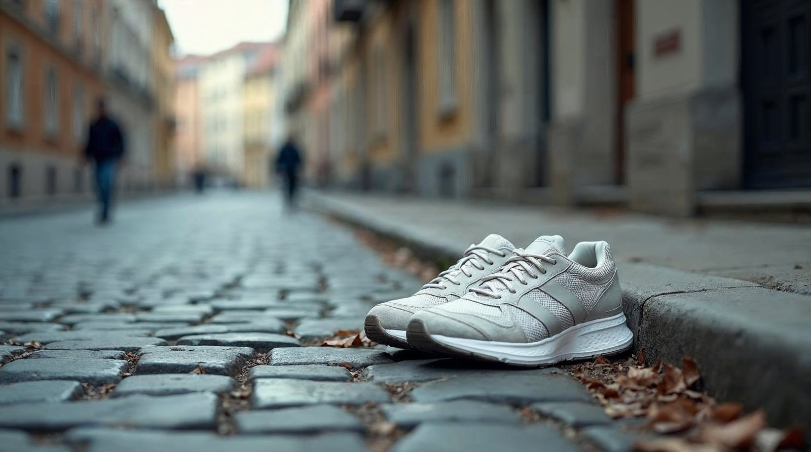

이종호 한의사 감수좋은꿈참사랑한의원 대표원장 (한의사 면허번호 19769)발행 2026-11-26 · 수정 2026-11-26
이 글의 차례
내리막길에서 보도블록 모서리를 잘못 디딘 순간, 발목이 안쪽으로 꺾이며 '또'라는 말이 먼저 나옵니다. 몇 걸음 절룩이다 보면 걸을 만해서 그냥 집에 오지만, 저녁이 되자 복사뼈 아래가 부어오릅니다. 작년에도, 그 전해에도 같은 발목이었습니다.
발목을 접질리는 발목 염좌는 대부분 발이 안쪽으로 꺾이면서 바깥 복사뼈 앞쪽의 인대가 늘어나거나 찢어지는 손상입니다. 흔한 만큼 가볍게 넘기기 쉽지만, 처음 다친 뒤 인대와 발목의 균형 감각이 충분히 돌아오기 전에 다시 쓰기 시작하면 같은 발목을 반복해서 접질리는 '발목 불안정'으로 이어지기도 합니다.
다만 다친 뒤 네 걸음도 체중을 싣고 걷기 어렵거나, 복사뼈 뒤쪽 끝이나 발 바깥 날의 뼈를 눌렀을 때 아프거나, 발목 모양이 달라 보인다면 골절 가능성이 있어 이 글보다 엑스레이 확인이 먼저입니다.
"붓기만 빠지면 괜찮겠지 했어요." 발목 이야기로 오신 분들께 가장 많이 듣는 말입니다. 바쁜 하루에 발목 하나 때문에 병원에 가기도 애매하고, 걸을 수 있으니 참고 지내셨을 겁니다. 그렇게 버틴 시간을 탓할 생각은 없습니다. 다만 이번에는 다음 접질림을 줄이는 쪽으로 같이 보셨으면 합니다.
발목이 불안하면 걸음이 조심스러워지고, 계단과 내리막, 울퉁불퉁한 길이 겁이 납니다. 운동을 좋아하던 분은 뛰는 것을 피하게 되고, 어르신은 외출이 줄어듭니다. 발목 하나가 생활의 반경을 좁히는 셈이지요.
왜 한 번 접질린 발목을 또 접질릴까요
발목 바깥쪽에는 복사뼈와 발뼈를 이어 주는 인대가 몇 가닥 있습니다. 발이 안쪽으로 꺾이면 이 가운데 앞쪽 인대가 가장 먼저 늘어나고, 더 크게 꺾이면 아래쪽 인대까지 다칩니다. 늘어난 인대는 시간이 지나며 아물지만, 원래보다 느슨하게 아무는 경우도 있습니다.
더 중요한 것은 보이지 않는 감각입니다. 인대와 관절 주머니에는 발목이 지금 어느 각도에 있는지 뇌에 알려 주는 작은 감지기들이 있습니다. 덕분에 우리는 발밑을 보지 않고도 울퉁불퉁한 길을 걷고, 발이 꺾이려는 순간 근육이 먼저 반응해 잡아 줍니다.
인대를 다치면 이 감지기도 함께 다칩니다. 붓기가 빠지고 통증이 사라져도 이 감각과 발목을 잡아 주는 종아리 바깥 근육의 반응은 늦게 돌아오는 경우가 많다고 알려져 있습니다. 그래서 '아프지 않은 발목'과 '다시 접질리지 않는 발목'은 다릅니다.
이 상태에서 예전처럼 뛰고 내리막을 걸으면, 발이 꺾이는 순간 근육이 한발 늦게 반응해 다시 접질립니다. 접질릴 때마다 인대는 조금 더 느슨해지고 감각은 더 무뎌지는 고리가 만들어집니다. 반복 염좌를 '습관성'이라고 부르는 이유입니다.
한의학에서는 이렇게 같은 자리를 거듭 다치는 것을 근(筋)이 약해지고 기혈이 그 자리를 충분히 채우지 못한 모습으로 봅니다. 다친 자리만이 아니라 다리 전체의 힘과 몸의 회복력을 함께 살피는 것도 그래서입니다.
처음 다친 날, 이것부터 확인합니다
다친 직후 엑스레이가 필요한지 가늠하는 흔히 쓰는 기준이 있습니다. 아래 가운데 하나라도 해당한다면 영상 확인을 먼저 받으세요.
- 다친 직후와 지금 모두, 아픈 발로 네 걸음을 체중을 싣고 걷기 어려운 경우
- 바깥 복사뼈나 안쪽 복사뼈의 뒤쪽 끝, 아래 끝을 눌렀을 때 뼈가 아픈 경우
- 발 바깥 날 가운데 툭 튀어나온 뼈(새끼발가락 쪽 발등뼈 뿌리)를 눌렀을 때 아픈 경우
- 발등 안쪽 가운데 뼈를 눌렀을 때 아픈 경우
뼈에 이상이 없다면 다친 정도는 붓기와 멍, 걷는 능력으로 대략 나눠 봅니다. 살짝 붓고 걸을 수 있다면 가벼운 쪽, 많이 붓고 멍이 넓게 번지며 절뚝이게 된다면 인대가 더 많이 다친 쪽을 생각합니다. 처음 며칠 붓기를 잘 다스리는 것이 그 뒤 회복의 바탕이 됩니다.

스스로 점검해 보세요
- 지난 1~2년 사이 같은 발목을 두 번 이상 접질렸는지
- 울퉁불퉁한 길이나 내리막에서 발목이 '휘청'하는 느낌이 드는지
- 아픈 쪽 발로 눈을 뜨고 한 발로 서서 30초를 버티기 어려운지, 성한 쪽과 차이가 큰지
- 오래 걸은 날 저녁 복사뼈 주변이 붓는지
- 발목을 위로 꺾을 때 앞쪽이 걸리거나 끝까지 꺾이지 않는지
한 발 서기는 집에서 쉽게 해 볼 수 있는 점검입니다. 벽이나 식탁 옆에서, 넘어질 것 같으면 바로 짚을 수 있는 곳에서 해 보세요. 어르신은 꼭 손을 짚을 곳을 옆에 두고 하시고, 어지럼이 있다면 하지 않습니다.
먼저 이렇게 여쭙니다
- 처음 접질린 것은 언제였고, 그때 병원에서 확인을 받으셨나요?
- 다친 직후 걸을 수 있었나요? 붓기와 멍은 어느 정도였나요?
- 그 뒤로 몇 번 더 접질렸고, 주로 어떤 상황이었나요?
- 지금은 아프다기보다 불안하다는 느낌이 더 큰가요?
- 발목이 걸리거나 '딸깍' 하며 빠지는 느낌이 있나요?
- 주로 신는 신발과 하는 운동은 무엇인가요?
- 무릎이나 허리, 반대쪽 발목에도 불편이 있나요?
진료실에서 함께 확인하는 것
발목 주변 인대가 지나는 자리를 하나씩 눌러 아픈 곳을 찾고, 발목을 앞뒤, 안팎으로 움직여 보며 양쪽을 비교합니다. 정강이를 잡고 발을 살짝 앞으로 당겨 보며 인대가 얼마나 느슨한지도 봅니다.
그다음 서서 한 발 서기를 해 보시게 합니다. 몇 초를 버티는지, 버티는 동안 발목이 얼마나 흔들리는지, 엉덩이와 무릎이 어떻게 따라 움직이는지를 봅니다. 발목이 불안한 분은 엉덩이 옆 근육으로 몸을 잡는 힘도 함께 약해져 있는 경우가 많습니다.
인대와 주변 힘줄의 모양을 볼 필요가 있다고 판단되면 초음파로 함께 확인합니다. 인대가 크게 끊어진 것이 의심되거나, 연골 손상처럼 영상이 더 필요해 보이면 정형외과 진료를 먼저 안내합니다.
일상에서 먼저 해 볼 수 있는 것
- 다친 첫 이틀은 보호하고 쉬며, 차갑게 하고, 압박 붕대를 감고, 누울 때 발을 심장보다 높이 두기
- 붓기가 줄면 아프지 않은 범위에서 발목으로 알파벳을 그리듯 천천히 돌리기
- 걸을 수 있게 되면 벽을 짚고 한 발 서기를 하루 몇 번, 30초씩 하기
- 한 발 서기가 쉬워지면 눈을 감거나, 접은 수건이나 방석 위에서 서기
- 앉아서 고무줄을 발에 걸고 발을 바깥으로 밀어 종아리 바깥 근육 쓰기
- 운동을 다시 시작할 때 처음 몇 주는 발목 보호대나 테이핑을 함께 쓰기
이 가운데 가장 중요한 것을 하나만 꼽으라면 한 발 서기입니다. 무뎌진 발목의 감각을 다시 깨우는 데 도움이 될 수 있는 연습으로 흔히 권하는 방법이고, 양치하는 동안 한 발로 서 있는 것처럼 생활에 붙여 두면 몇 주 이어 가기가 수월합니다.
붓기가 빠졌다고 바로 예전처럼 뛰지 마세요. 걷기, 빠르게 걷기, 가볍게 뛰기, 방향 바꾸기 순서로 한 단계씩 올리고, 한 단계에서 발목이 불안하지 않을 때 다음으로 넘어갑니다. 다친 정도에 따라 이 과정에 몇 주가 걸리기도 합니다.
계단을 내려갈 때는 발 앞쪽만 계단 끝에 걸치지 말고 발 전체를 디딘다는 느낌으로 내려가세요. 발 앞쪽만 걸치면 발목이 아래로 꺾인 채 체중을 받아 옆으로 쉽게 꺾입니다. 어두운 계단에서는 휴대전화를 보지 말고 난간을 잡는 것만으로도 헛디딤이 줄어듭니다.
발목만 연습하지 말고 엉덩이 옆 근육도 같이 써 주세요. 옆으로 누워 위쪽 다리를 천천히 들었다 내리는 동작은 한 발로 섰을 때 골반이 흔들리지 않게 잡아 주는 근육을 깨웁니다. 골반이 덜 흔들리면 발목이 받는 흔들림도 그만큼 줄어듭니다.
신발도 살펴봅니다. 굽이 높거나 바닥이 좁고 닳아 바깥쪽이 기울어진 신발은 발목을 쉽게 꺾이게 합니다. 언덕과 계단이 많은 동네라면 바닥이 평평하고 발을 잘 잡아 주는 신발이 도움이 됩니다.
예를 들면 이런 경우입니다
실제 어느 분의 사연이 아니라, 진료실에서 자주 보는 모습을 바탕으로 그려 본 장면입니다.
예를 들어 주말마다 풋살이나 농구를 하는 분이 몇 해 전 접질린 발목을 대충 넘기고 지냈다면, 방향을 바꾸는 순간 같은 발목이 다시 꺾이기 쉽습니다. 이럴 때는 경기에 나가기 전 몇 주 동안 한 발 서기와 가볍게 옆으로 뛰기를 먼저 연습하고, 처음에는 보호대를 함께 쓰시라고 말씀드립니다.
굽 있는 구두를 신고 출퇴근하며 언덕길과 계단을 오가는 분이라면, 발목이 바깥으로 기우는 순간이 하루에도 여러 번 생깁니다. 오래 걷는 날만이라도 바닥이 평평한 신발로 바꿔 신고, 구두는 사무실에서 갈아 신는 방법을 함께 생각해 봅니다.
어르신이 문턱이나 계단에서 발을 헛디딘 뒤 붓지 않았다며 넘기셨다면, 발목보다 균형 자체가 떨어진 것은 아닌지 함께 봅니다. 의자 등받이를 잡고 한 발 서기를 짧게 하는 것부터 시작하고, 집 안 문턱과 욕실 바닥도 같이 점검합니다.
한의원에서 함께 살필 수 있는 경우
- 뼈에 이상이 없다는 확인을 받은 뒤 붓기와 통증이 이어지는 경우
- 같은 발목을 자주 접질리고 걸을 때 불안한 경우
- 오래 걸은 날 저녁 복사뼈 주변이 붓고 시큰한 경우
- 발목이 불안해 걸음이 바뀌며 무릎이나 허리까지 불편해진 경우
좋은꿈참사랑한의원에 처음 오시면 골절이 의심되는 신호가 없는지부터 확인하고, 모든 분께 맥을 짚습니다. 그다음 인대가 지나는 자리의 통증, 발목 움직임, 한 발 서기와 걸음을 확인합니다.
진찰 뒤에는 침과 약침, 온열 치료 같은 물리치료, 오래된 인대·힘줄 쪽 불편이 남아 있을 때 상의하는 체외충격파, 발목과 무릎, 골반의 정렬을 함께 보는 추나 가운데 지금 상태에 맞는 방법을 고릅니다. 갓 다쳐 붓기가 큰 시기와 불안함이 남은 시기는 고르는 방법이 다를 수 있어, 그날 발목을 보고 정하고 이유를 설명해 드립니다.
집에서 할 균형 연습은 지금 버틸 수 있는 시간에 맞춰 함께 정합니다. 다시 오시면 한 발 서기 시간을 같은 방법으로 다시 재어 비교하고, 연습 단계를 올릴지 정합니다. 불안함이 오래 이어지고 접질림이 계속된다면 정형외과에서 인대 상태를 다시 확인해 보시도록 안내합니다.

이렇게 기록해 오시면 상담이 쉬워집니다
- 처음 다친 날과 그 뒤 접질린 날짜, 그때의 상황(내리막, 운동, 계단 등)
- 다친 직후 걸을 수 있었는지, 붓기와 멍의 범위
- 하루 한 번 한 발 서기로 버틴 시간(양쪽)
- 오래 걸은 날 저녁 붓기
- 주로 신는 신발, 하는 운동
- 병원 엑스레이·초음파 결과, 깁스나 보조기를 썼다면 그 기간
이런 증상은 먼저 확인이 필요합니다
- 다친 뒤 아픈 발로 네 걸음을 체중을 싣고 걷기 어려운 경우
- 복사뼈 뒤쪽 끝이나 발 바깥 날의 뼈를 눌렀을 때 아픈 경우
이런 신호가 있으면 한의원보다 가까운 병원이나 응급실을 먼저 찾으세요.
발목은 몸 전체를 받치는 작은 관절입니다. 자꾸 꺾이다 보면 길을 걷는 일 자체가 조심스러워지지요. 그래도 균형은 연습한 만큼 다시 깨어나는 감각입니다. 오늘부터 양치할 때 한 발로 서 보시고, 다음에 오시면 몇 초를 버티셨는지부터 여쭙겠습니다.
함께 읽으면 좋은 글
- 어르신이 계단에서 발목을 헛디뎠을 때, 붓지 않았다면 괜찮은 걸까요?
- 아침마다 내리막길로 출근하는데 정강이 앞쪽과 발목이 뻐근할 때는 어떻게 살피나요?
- 발바닥 통증은 어떤 종류가 있고 어떻게 구분해서 살피나요?
- 동네 공원 걷기를 새로 시작했는데 발바닥이 아플 때는 어떻게 살피나요?
- 근육이 아픈 것인지 관절이 아픈 것인지 어떻게 짚어서 말하나요?
여쭙는 것
- 처음 접질린 것은 언제였고, 그때 병원에서 확인을 받으셨나요?
- 다친 직후 걸을 수 있었나요? 붓기와 멍은 어느 정도였나요?
- 그 뒤로 몇 번 더 접질렸고, 주로 어떤 상황이었나요?
생활에서 해 볼 것
- 다친 첫 이틀은 보호하고 쉬며, 차갑게 하고, 압박 붕대를 감고, 누울 때 발을 심…
- 붓기가 줄면 아프지 않은 범위에서 발목으로 알파벳을 그리듯 천천히 돌리기
- 걸을 수 있게 되면 벽을 짚고 한 발 서기를 하루 몇 번, 30초씩 하기
한의원에서 함께 살필 것
- 뼈에 이상이 없다는 확인을 받은 뒤 붓기와 통증이 이어지는 경우
- 같은 발목을 자주 접질리고 걸을 때 불안한 경우
- 오래 걸은 날 저녁 복사뼈 주변이 붓고 시큰한 경우
먼저 확인이 필요한 신호
- 다친 뒤 아픈 발로 네 걸음을 체중을 싣고 걷기 어려운 경우
- 복사뼈 뒤쪽 끝이나 발 바깥 날의 뼈를 눌렀을 때 아픈 경우
한눈에 보는 표
| 구분 | 핵심 |
|---|---|
| 여쭙는 것 | 처음 접질린 것은 언제였고, 그때 병원에서 확인을 받으셨나요? 다친 직후 걸을 수 있었나요? 붓기와 멍은 어느 정도였나요? |
| 생활에서 해 볼 것 | 다친 첫 이틀은 보호하고 쉬며, 차갑게 하고, 압박 붕대를 감고, 누울 때 발을 심장보다 높이 두기 붓기가 줄면 아프지 않은 범위에서 발목으로 알파벳을 그리듯 천천히 돌리기 |
| 한의원에서 함께 살필 것 | 뼈에 이상이 없다는 확인을 받은 뒤 붓기와 통증이 이어지는 경우 같은 발목을 자주 접질리고 걸을 때 불안한 경우 |
| 먼저 확인이 필요한 신호 | 다친 뒤 아픈 발로 네 걸음을 체중을 싣고 걷기 어려운 경우 복사뼈 뒤쪽 끝이나 발 바깥 날의 뼈를 눌렀을 때 아픈 경우 |
자주 묻는 질문
발목을 접질렸는데 걸을 수 있으면 병원에 안 가도 되나요?
걸을 수 있어도 복사뼈 뒤쪽 끝이나 발 바깥 날의 뼈를 눌렀을 때 아프다면 골절 확인이 필요합니다. 뼈에 이상이 없더라도 붓기가 크고 멍이 넓다면 인대 손상 정도를 확인해 두시길 권합니다.
붓기가 빠졌는데 바로 운동해도 되나요?
붓기와 통증이 사라져도 발목의 균형 감각은 늦게 돌아오는 경우가 많습니다. 한 발 서기가 양쪽 비슷해지는지 확인하며 걷기, 가볍게 뛰기, 방향 바꾸기 순서로 단계를 올리는 편을 권합니다.
발목 보호대는 계속 차야 하나요?
운동을 다시 시작하는 처음 몇 주나 울퉁불퉁한 길을 오래 걷는 날처럼 필요한 때에 쓰는 것은 도움이 될 수 있습니다. 보호대에만 기대기보다 균형 연습을 함께 이어 가세요.
접질린 직후 찜질은 따뜻하게 하나요?
다친 직후 붓고 열감이 있을 때는 차갑게 하는 것이 일반적인 기준입니다. 붓기가 가라앉고 뻣뻣함이 남는 시기에는 따뜻하게 하는 편이 편하다는 분이 많습니다.
자꾸 접질리면 결국 수술해야 하나요?
많은 경우 균형 연습과 근력 운동, 생활 조절을 먼저 해 봅니다. 그래도 불안함과 접질림이 계속되거나 인대 손상이 크다면 정형외과에서 다른 방법을 상의하게 됩니다.
좋은꿈참사랑한의원은 재진 때 지난번 이야기부터 이어서 여쭙니다. 진료시간과 예약은 오시는 길에서 확인하세요.
어디서 상담받을 수 있나요?
좋은꿈참사랑한의원은 서울 동작구 만양로2길 2 신성빌딩 3층·5층(서울 동작구 상도동, 7호선 상도역 3번 출구 근처)에 있습니다. 한의사 3명(이종호 대표원장, 조영기 수석진료원장, 정원영 진료원장)이 진료합니다. 진료시간은 평일 09:30~20:00(점심 13:00~14:00), 토·일·공휴일 09:30~15:00이며, 방문 전 전화로 확인을 권합니다. 예약은 네이버 예약, 카카오톡 상담, 전화 02-815-7510로 받습니다.
이 글은 일반적인 건강 정보이며 개인의 진단이나 치료를 대신하지 않습니다. 증상이 있거나 복용 중인 약이 있다면 진료를 통해 확인하세요. 치료 효과는 개인마다 다를 수 있습니다.
작성 기준: 일반적으로 알려져 있는 건강 정보를 참고해 정리했습니다(대표원장 감수). 증상 기록은 1~2주 동안 하루 1회, 비슷한 시간에 적어 오시면 지난 상태와 비교하기 쉽습니다.